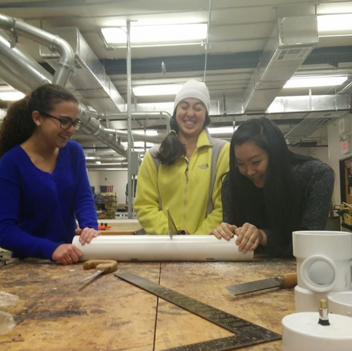
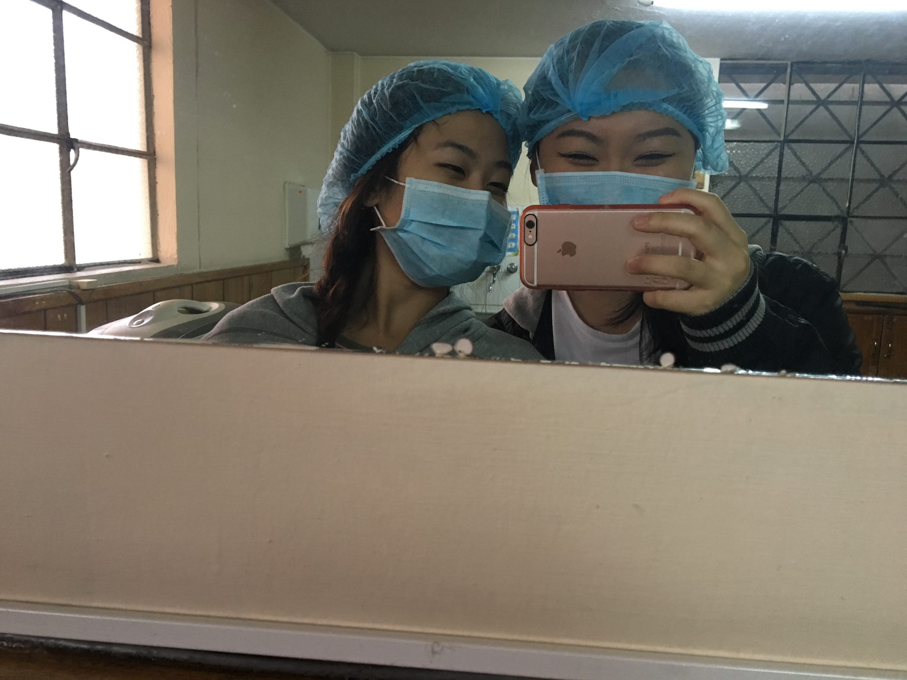
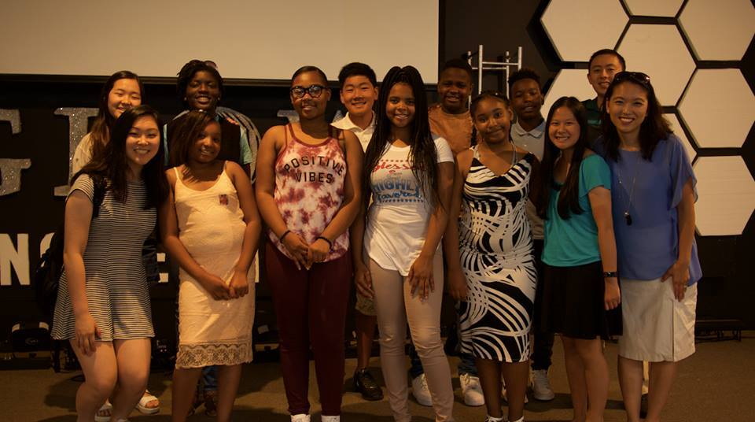
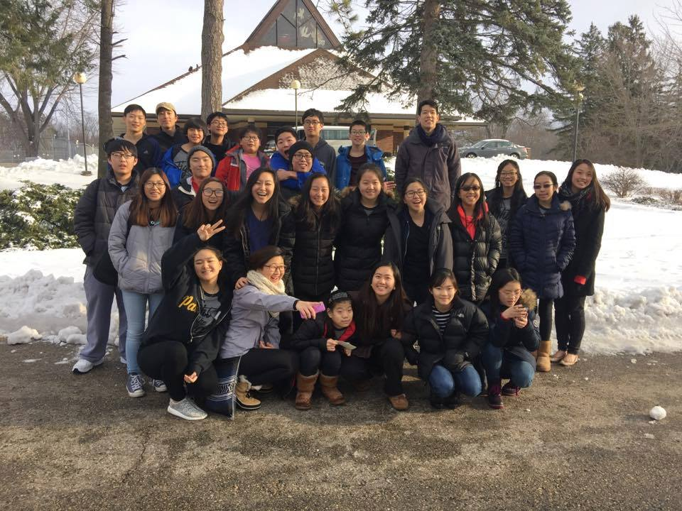
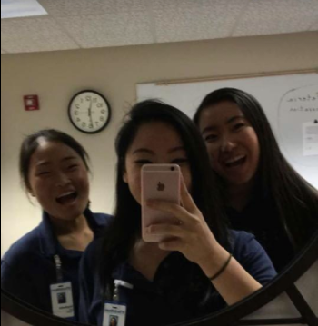
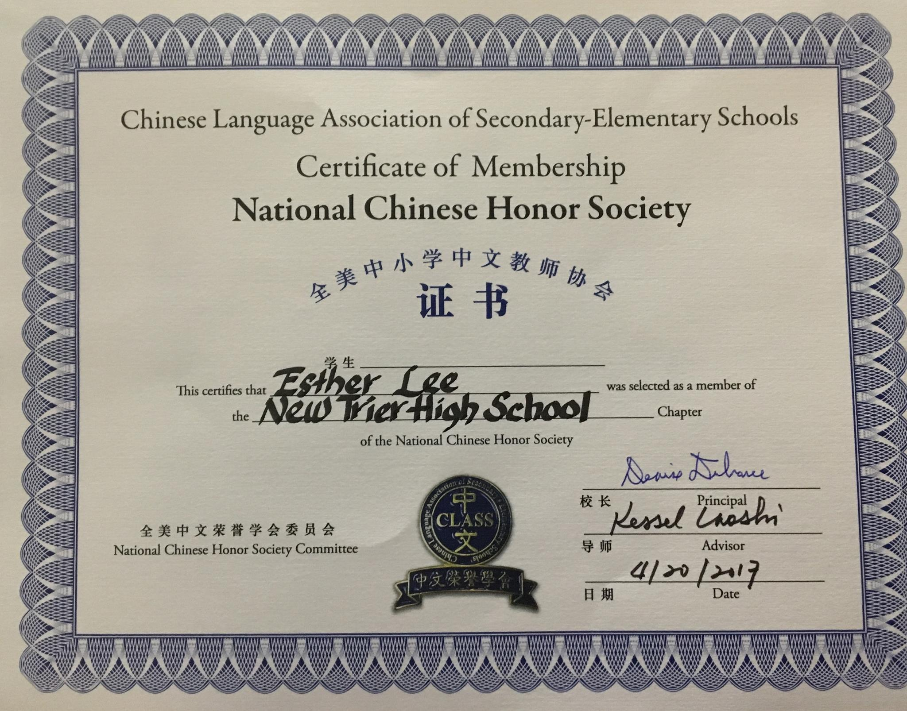
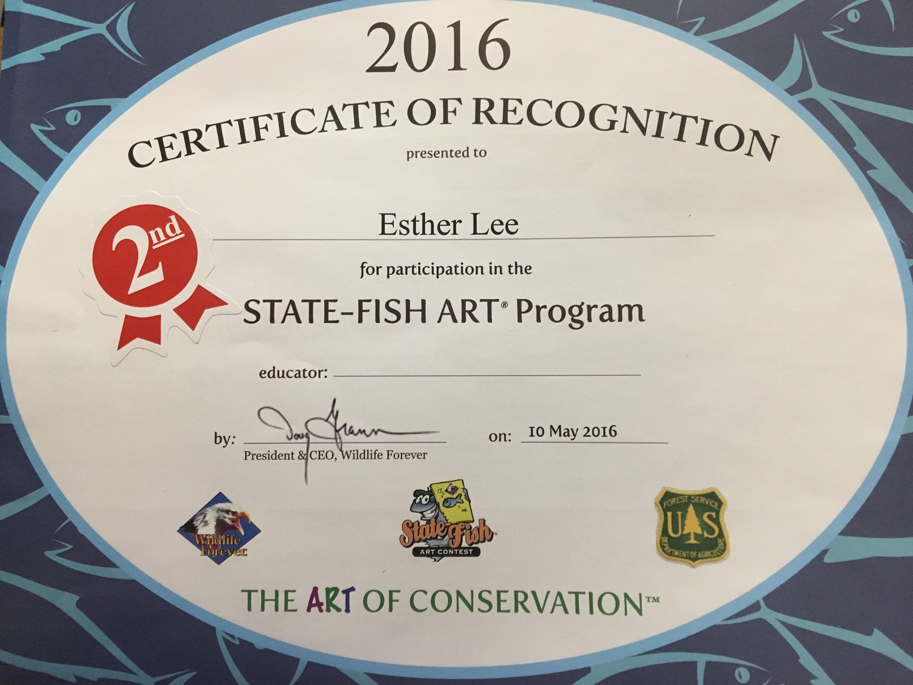

I have attended Asian Youth Services for the past four years at my high school. Every Thursday, I would commute with my peers to tutor kids in Chicago. Though it may sound cliché, this experience truly opened my eyes. Growing up in the North Shore skewed my perception of "normal." In my eyes, almost nothing was an accessory; Jeep Wranglers and latest phone upgrades were necessities that many owned. However, I remember a distinct moment that snapped me awake from the delusional affluence I was so used to. I was helping a girl with her project and asked her if she had any tape. She shook her head and told me that she had received Scotch tape for her birthday, but had used all of it. Being exposed to people whose definitions of "normal" were substantially different from mine forced me to see beyond the North Shore bubble. I am extremely grateful for the exposure and the opportunity to interact with children growing up in a different area.
Sweets

Society of Women in Engineering, Entrepreneurship, Technology, and Science (abbreviated to SWEETS club) was a club exclusively for girls. This club had an extremely supportive environment. We tackled subjects like the lack of women in the STEM fields and the treatment they face. We also built potato canons and experimented with coding and liquid nitrogen. Dipping into the various aspects of STEM fields helped me overcome the fact that they were male-dominated and discover the excitement these fields have to offer.
Ecuador Trip

In the summer of 2016, I took a trip to Ecuador, which would mark the second time leaving the States. During this trip, the Ecuadorian government had issued a mandatory school break due to a few political and economical issues. Though I wasn't able to meet any Ecuadorian children, I was still given great opportunities to watch adults at work, and contributed when I could. I watched dentists drill cavities as I washed their instruments, doctors give check-ups as I measured their patients' heights, and surgeons operate on a woman. I could not aid the surgeons, but I was able to help the nurses gather and pack materials. I also helped repaint schools and reorganize medical files at clinics. Ecuador is a beautiful place packed with beautiful people. I was shown warm hospitality and gained unique experiences that only this trip has provided me.
Monster Education

Monster Education is an organization that allows underpriviledged children the chance to utilize their potential to the fullest. Every summer, certain children are chosen out of their sixth grade class. These special students have received remarkable grades, and are rewarded with an early college investment. Monster Education gives them an assignment every summer to contribute to their community. Each student is given $50 to buy necessary materials, and if they complete the assignment, they will receive an additional $50 both as an Amazon giftcard and in their college funds. As a volunteer, I aid in preperation and sometimes execution of their project. This year, I was assigned to Vincynthia. Vincynthia and I brainstormed ideas through email. She finally decided that she wanted to show policemen her appreciation. After back-and-forth responses, she created 20 lunch bags and handed them out at her local station. As I met up with her later in the summer, she told me how good it felt to give back to the community. It was heart-warming to see her care placed into tangible efforts. Despite their circumstances, these children are able to envision and prepare for their bright future ahead.
Science Olympiad
I participated in Science Olympiad for two years. There, I joined the events "Game On," "Experimental Design," and "Anatomy." This club was very time-consuming, but nonetheless exciting. Through these events, I was able to expand and test my knowledge in new ways. Game on was an event where one had to create a specific game using the program Scratch. Experimental Design was an event where a group of three students had to design an experiment with the given materials. Anatomy was, well, anatomy. I had not taken neither a game development nor an anatomy class before, yet I was given the chance to learn about both. It was a club of learning and bonding with peers who had the same craving for new knowledge.
Chinese Culture Club
I started learning Chinese my freshman year. Chinese is a complex language, however, my passion for it began to develop over the course of my high school career. But learning a language encompasses more than the letters––or characters in this case. A language embodies the culture of the place, as well. To advance my knowledge in Chinese, I joined Chinese Culture club. By my junior year, I became a cohead. I organized events every week to help fellow students learning Chinese understand the culture and meaning behind Chinese customs and holidays. As a cohead, not only did I further my Chinese education, but I also gained time-management and organizational skills.
Praise Band

Every Sunday at 9:00am, I would enter church with my guitar slung across my back. For the hour before service, a few others and I would dedicate our time to sync our rhythm and perfect our songs. This responsibility rooted my faith in Christianity. Using my musical abilities to communicate the importance of the religion would not only affect me, but others, too. Because my faith could be audibly heard through my guitar, I made sure my faith's flame never dimmed. This experience would continue to lay a foundation for my strong beliefs.
Hospital Volunteer

I began volunteering at the North Shore clinic my junior year. From 8am to 12pm on Saturday mornings, I would spend my time passing out newspapers to patient rooms, giving directions, delivering blood, and wheeling patients to and fro. Delivering newspapers was always an exciting job. It was a firsthand experience to witness nurses and doctors at work and interact with the patients. Often with most "Hi, would you like a newspaper?" followed a pleasant conversation between the patient and I. I looked forward to the weekly volunteering, which gave me a glimpse into reality.
SILC
The Senior Instructional Leadership Corps (SILC) offers qualified seniors the opportunity to participate in a variety of activities associated with classroom instruction. I engage in leadership development through working in a classroom with a mentoring teacher 2-5 periods a week. I also assist in whatever curricular activites the teacher asks. I SILC my Chinese class. Through this, I am able to repolish my old Chinese skills and help students whose shoes I was just in.
Advisory Representative for Habitat for Humanity
I am an advisory rep for Habitat for Humanity. I bring relay messages and bring excitement with every new Habitat for Humanity update.
Awards
National Chinese Honor Society

Chinese Speech ContestState Fish Art Certificate
